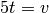
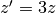
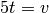
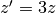

Problem¶
- class picos.Problem(**options)¶
This class represents an optimization problem. The constructor creates an empty problem. Some options can be provided under the form key = value. See the list of available options in the doc of set_all_options_to_default()
- add_constraint(cons, key=None, ret=False)¶
Adds a constraint in the problem.
Parameters: - cons (Constraint) – The constraint to be added.
- key (str.) – Optional parameter to describe the constraint with a key string.
- ret (bool.) – Do you want the added constraint to be returned ? This can be useful to access the dual of this constraint.
- add_list_of_constraints(lst, it=None, indices=None, key=None, ret=False)¶
adds a list of constraints in the problem. This fonction can be used with python list comprehensions (see the example below).
Parameters: - lst – list of Constraint.
- it (None or str or list.) – Description of the letters which should be used to replace the dummy indices. The function tries to find a template for the string representations of the constraints in the list. If several indices change in the list, their letters should be given as a list of strings, in their order of appearance in the resulting string. For example, if three indices change in the constraints, and you want them to be named 'i', 'j' and 'k', set it = ['i','j','k']. You can also group two indices which always appear together, e.g. if 'i' always appear next to 'j' you could set it = [('ij',2),'k']. Here, the number 2 indicates that 'ij' replaces 2 indices. If it is set to None, or if the function is not able to find a template, the string of the first constraint will be used for the string representation of the list of constraints.
- indices (str.) – a string to denote the set where the indices belong to.
- key (str.) – Optional parameter to describe the list of constraints with a key string.
- ret (bool.) – Do you want the added list of constraints to be returned ? This can be useful to access the duals of these constraints.
Example:
>>> import picos as pic >>> import cvxopt as cvx >>> prob=pic.Problem() >>> x=[prob.add_variable('x[{0}]'.format(i),2) for i in range(5)] >>> x [# variable x[0]:(2 x 1),continuous #, # variable x[1]:(2 x 1),continuous #, # variable x[2]:(2 x 1),continuous #, # variable x[3]:(2 x 1),continuous #, # variable x[4]:(2 x 1),continuous #] >>> y=prob.add_variable('y',5) >>> IJ=[(1,2),(2,0),(4,2)] >>> w={} >>> for ij in IJ: ... w[ij]=prob.add_variable('w[{0}]'.format(ij),3) ... >>> u=pic.new_param('u',cvx.matrix([2,5])) >>> prob.add_list_of_constraints( ... [u.T*x[i]<y[i] for i in range(5)], ... 'i', ... '[5]') >>> >>> prob.add_list_of_constraints( ... [abs(w[i,j])<y[j] for (i,j) in IJ], ... [('ij',2)], ... 'IJ') >>> >>> prob.add_list_of_constraints( ... [y[t] > y[t+1] for t in range(4)], ... 't', ... '[4]') >>> >>> print prob --------------------- optimization problem (SOCP): 24 variables, 9 affine constraints, 12 vars in 3 SO cones x : list of 5 variables, (2, 1), continuous w : dict of 3 variables, (3, 1), continuous y : (5, 1), continuous find vars such that u.T*x[i] < y[i] for all i in [5] ||w[ij]|| < y[ij__1] for all ij in IJ y[t] > y[t+1] for all t in [4] ---------------------
- add_variable(name, size=1, vtype='continuous', lower=None, upper=None)¶
adds a variable in the problem, and returns the corresponding instance of the Variable.
For example,
>>> prob=pic.Problem() >>> x=prob.add_variable('x',3) >>> x # variable x:(3 x 1),continuous #
Parameters: - name (str.) – The name of the variable.
- size (int or tuple.) –
The size of the variable.
Can be either:
- an int n , in which case the variable is a vector of dimension n
- or a tuple (n,m), and the variable is a n x m-matrix.
- vtype (str.) –
variable type. Can be:
- 'continuous' (default),
- 'binary': 0/1 variable
- 'integer': integer valued variable
- 'symmetric': symmetric matrix
- 'complex': complex matrix variable
- 'hermitian': complex hermitian matrix
- 'semicont': 0 or continuous variable satisfying its bounds
- 'semiint': 0 or integer variable satisfying its bounds
- lower (Any type recognized by the function _retrieve_matrix().) – a lower bound for the variable. Can be either a vector/matrix of the same size as the variable, or a scalar (in which case all elements of the variable have the same lower bound).
- upper (Any type recognized by the function _retrieve_matrix().) – an upper bound for the variable. Can be either a vector/matrix of the same size as the variable, or a scalar (in which case all elements of the variable have the same upper bound).
Returns: An instance of the class Variable.
- check_current_value_feasibility(tol=1e-05)¶
returns True if the current value of the variabless is a feasible solution, up to the tolerance tol. If tol is set to None, the option parameter options['tol'] is used instead. The integer feasibility is checked with a tolerance of 1e-3.
- constraints = None¶
list of all constraints
- copy()¶
creates a copy of the problem.
- countCons = None¶
numner of (multidimensional) constraints
- countGeomean = None¶
number of geomean (and other nonstandard convex) inequalities
- countVar = None¶
number of (multidimensional) variables
- dualize()¶
Returns a Problem containing the Lagrangian dual of the current problem self. More precisely, the current problem is parsed as a problem in a canonical primal form (cf. the note on dual variables of the tutorial), and the corresponding dual form is returned.
- get_constraint(ind)¶
returns a constraint of the problem.
Parameters: ind (int or tuple.) – There are two ways to index a constraint.
- if ind is an int
 , then the nth constraint (starting from 0)
will be returned, where all the constraints are counted
in the order where they were passed to the problem.
, then the nth constraint (starting from 0)
will be returned, where all the constraints are counted
in the order where they were passed to the problem. - if ind is a tuple
 , then the ith constraint
from the kth group of constraints is returned
(starting from 0). By
group of constraints, it is meant a single constraint
or a list of constraints added together with the
function add_list_of_constraints().
, then the ith constraint
from the kth group of constraints is returned
(starting from 0). By
group of constraints, it is meant a single constraint
or a list of constraints added together with the
function add_list_of_constraints(). - if ind is a tuple of length 1
 ,
then the list of constraints of the kth group is returned.
,
then the list of constraints of the kth group is returned.
Example:
>>> import picos as pic >>> import cvxopt as cvx >>> prob=pic.Problem() >>> x=[prob.add_variable('x[{0}]'.format(i),2) for i in range(5)] >>> y=prob.add_variable('y',5) >>> prob.add_list_of_constraints( ... [(1|x[i])<y[i] for i in range(5)], ... 'i', ... '[5]') >>> prob.add_constraint(y>0) >>> print prob --------------------- optimization problem (LP): 15 variables, 10 affine constraints x : list of 5 variables, (2, 1), continuous y : (5, 1), continuous find vars such that 〈 |1| | x[i] 〉 < y[i] for all i in [5] y > |0| --------------------- >>> prob.get_constraint(1) #2d constraint (numbered from 0) # (1x1)-affine constraint: 〈 |1| | x[1] 〉 < y[1] # >>> prob.get_constraint((0,3)) #4th consraint from the 1st group # (1x1)-affine constraint: 〈 |1| | x[3] 〉 < y[3] # >>> prob.get_constraint((1,)) #unique constraint of the 2d 'group' # (5x1)-affine constraint: y > |0| # >>> prob.get_constraint((0,)) #list of constraints of the 1st group [# (1x1)-affine constraint: 〈 |1| | x[0] 〉 < y[0] #, # (1x1)-affine constraint: 〈 |1| | x[1] 〉 < y[1] #, # (1x1)-affine constraint: 〈 |1| | x[2] 〉 < y[2] #, # (1x1)-affine constraint: 〈 |1| | x[3] 〉 < y[3] #, # (1x1)-affine constraint: 〈 |1| | x[4] 〉 < y[4] #] >>> prob.get_constraint(5) #6th constraint # (5x1)-affine constraint: y > |0| #
- if ind is an int
- get_valued_variable(name)¶
Returns the value of the variable (as an cvxopt matrix) with the given name. If name refers to a list (resp. dict) of variables, named with the template name[index] (resp. name[key]), then the function returns the list (resp. dict) of these variables.
Parameters: name (str.) – name of the variable, or of a list/dict of variables. Warning
If the problem has not been solved, or if the variable is not valued, this function will raise an Exception.
- get_variable(name)¶
Returns the variable (as a Variable) with the given name. If name refers to a list (resp. dict) of variables, named with the template name[index] (resp. name[key]), then the function returns the list (resp. dict) of these variables.
Parameters: name (str.) – name of the variable, or of a list/dict of variables.
- is_continuous()¶
Returns True if there are only continuous variables
- numberAffConstraints = None¶
total number of (scalar) affine constraints
- numberConeConstraints = None¶
number of SOC constraints
- numberConeVars = None¶
number of auxilary variables required to handle the SOC constraints
- numberLSEConstraints = None¶
number of LogSumExp constraints (+1 if the objective is a LogSumExp)
- numberLSEVars = None¶
number of vars in LogSumExp expressions
- numberOfVars = None¶
total number of (scalar) variables
- numberQuadConstraints = None¶
number of quadratic constraints (+1 if the objective is quadratic)
- numberQuadNNZ = None¶
number of nonzero entries in the matrices defining the quadratic expressions
- numberSDPConstraints = None¶
number of SDP constraints
- numberSDPVars = None¶
size of the s-vecotrized matrices involved in SDP constraints
- obj_passed = None¶
list of solver instances where the objective has been passed
- obj_value()¶
If the problem was already solved, returns the objective value. Otherwise, it raises an AttributeError.
- remove_all_constraints()¶
Removes all constraints from the problem This function does not remove hard-coded bounds on variables; use the function remove_all_variable_bounds() to do so.
- remove_all_variable_bounds()¶
remove all the lower and upper bounds on variables (i.e,, hard-coded bounds passed in the attribute bnd of the variables.
- remove_constraint(ind)¶
Deletes a constraint or a list of constraints of the problem.
Parameters: ind (int or tuple.) – The indexing of constraints works as in the function get_constraint():
- if ind is an integer , the nth constraint
(numbered from 0) is deleted
- if ind is a tuple , then the ith constraint
from the kth group of constraints is deleted
(starting from 0). By
group of constraints, it is meant a single constraint
or a list of constraints added together with the
function add_list_of_constraints().
- if ind is a tuple of length 1 ,
then the whole kth group of constraints is deleted.
Example:
>>> import picos as pic >>> import cvxopt as cvx >>> prob=pic.Problem() >>> x=[prob.add_variable('x[{0}]'.format(i),2) for i in range(4)] >>> y=prob.add_variable('y',4) >>> prob.add_list_of_constraints( ... [(1|x[i])<y[i] for i in range(4)], 'i', '[5]') >>> prob.add_constraint(y>0) >>> prob.add_list_of_constraints( ... [x[i]<2 for i in range(3)], 'i', '[3]') >>> prob.add_constraint(x[3]<1) >>> prob.constraints [# (1x1)-affine constraint: 〈 |1| | x[0] 〉 < y[0] #, # (1x1)-affine constraint: 〈 |1| | x[1] 〉 < y[1] #, # (1x1)-affine constraint: 〈 |1| | x[2] 〉 < y[2] #, # (1x1)-affine constraint: 〈 |1| | x[3] 〉 < y[3] #, # (4x1)-affine constraint: y > |0| #, # (2x1)-affine constraint: x[0] < |2.0| #, # (2x1)-affine constraint: x[1] < |2.0| #, # (2x1)-affine constraint: x[2] < |2.0| #, # (2x1)-affine constraint: x[3] < |1| #] >>> prob.remove_constraint(1) #2d constraint (numbered from 0) deleted >>> prob.constraints [# (1x1)-affine constraint: 〈 |1| | x[0] 〉 < y[0] #, # (1x1)-affine constraint: 〈 |1| | x[2] 〉 < y[2] #, # (1x1)-affine constraint: 〈 |1| | x[3] 〉 < y[3] #, # (4x1)-affine constraint: y > |0| #, # (2x1)-affine constraint: x[0] < |2.0| #, # (2x1)-affine constraint: x[1] < |2.0| #, # (2x1)-affine constraint: x[2] < |2.0| #, # (2x1)-affine constraint: x[3] < |1| #] >>> prob.remove_constraint((1,)) #2d 'group' of constraint deleted, i.e. the single constraint y>|0| >>> prob.constraints [# (1x1)-affine constraint: 〈 |1| | x[0] 〉 < y[0] #, # (1x1)-affine constraint: 〈 |1| | x[2] 〉 < y[2] #, # (1x1)-affine constraint: 〈 |1| | x[3] 〉 < y[3] #, # (2x1)-affine constraint: x[0] < |2.0| #, # (2x1)-affine constraint: x[1] < |2.0| #, # (2x1)-affine constraint: x[2] < |2.0| #, # (2x1)-affine constraint: x[3] < |1| #] >>> prob.remove_constraint((2,)) #3d 'group' of constraint deleted, (originally the 4th group, i.e. x[3]<|1|) >>> prob.constraints [# (1x1)-affine constraint: 〈 |1| | x[0] 〉 < y[0] #, # (1x1)-affine constraint: 〈 |1| | x[2] 〉 < y[2] #, # (1x1)-affine constraint: 〈 |1| | x[3] 〉 < y[3] #, # (2x1)-affine constraint: x[0] < |2.0| #, # (2x1)-affine constraint: x[1] < |2.0| #, # (2x1)-affine constraint: x[2] < |2.0| #] >>> prob.remove_constraint((1,1)) #2d constraint of the 2d group (originally the 3rd group), i.e. x[1]<|2| >>> prob.constraints [# (1x1)-affine constraint: 〈 |1| | x[0] 〉 < y[0] #, # (1x1)-affine constraint: 〈 |1| | x[2] 〉 < y[2] #, # (1x1)-affine constraint: 〈 |1| | x[3] 〉 < y[3] #, # (2x1)-affine constraint: x[0] < |2.0| #, # (2x1)-affine constraint: x[2] < |2.0| #]
- if ind is an integer
- remove_variable(name)¶
Removes the variable name from the problem. :param name: name of the variable to remove. :type name: str.
Warning
This method does not check if some constraint still involves the variable to be removed.
- reset_cplex_instance(onlyvar=True)¶
reset the variables used by the solver cplex
- reset_cvxopt_instance(onlyvar=True)¶
reset the variable cvxoptVars, used by the solver cvxopt (and smcp)
- reset_gurobi_instance(onlyvar=True)¶
reset the variables used by the solver gurobi
- reset_mosek_instance(onlyvar=True)¶
reset the variables used by the solver mosek
- reset_scip_instance(onlyvar=True)¶
reset the variables used by the solver scip
- set_all_options_to_default()¶
set all the options to their default. The following options are available, and can be passed as pairs of the form key=value to solve() :
General options common to all solvers:
- verbose = 1 : verbosity level [0(quiet)|1|2(loud)]
- solver = None : currently the available solvers are 'cvxopt', 'cplex', 'mosek', 'gurobi', 'smcp', 'zibopt'. The default None means that you let picos select a suitable solver for you.
- tol = 1e-8 : Relative gap termination tolerance for interior-point optimizers (feasibility and complementary slackness).
- maxit = None : maximum number of iterations (for simplex or interior-point optimizers). This option is currently ignored by zibopt.
- lp_root_method = None : algorithm used to solve continuous LP problems, including the root relaxation of mixed integer problems. The default None selects automatically an algorithm. If set to psimplex (resp. dsimplex, interior), the solver will use a primal simplex (resp. dual simplex, interior-point) algorithm. This option currently works only with cplex, mosek and gurobi.
- lp_node_method = None : algorithm used to solve subproblems at nodes of the branching trees of mixed integer programs. The default None selects automatically an algorithm. If set to psimplex (resp. dsimplex, interior), the solver will use a primal simplex (resp. dual simplex, interior-point) algorithm. This option currently works only with cplex, mosek and gurobi.
- timelimit = None : time limit for the solver, in seconds. The default None means no time limit. This option is currently ignored by cvxopt and smcp.
- treememory = None : size of the buffer for the branch and bound tree, in Megabytes. This option currently works only with cplex.
- gaplim = 1e-4 : For mixed integer problems, the solver returns a solution as soon as this value for the gap is reached (relative gap between the primal and the dual bound).
- noprimals = False : if True, do not copy the optimal variable values in the value attribute of the problem variables.
- noduals = False : if True, do not try to retrieve the dual variables.
- nbsol = None : maximum number of feasible solution nodes visited when solving a mixed integer problem.
- hotstart = False : if True, the MIP optimizer tries to start from the solution specified (even partly) in the value attribute of the problem variables. This option currently works only with cplex, mosek and gurobi.
- convert_quad_to_socp_if_needed = True : Do we convert the convex quadratics to second order cone constraints when the solver does not handle them directly ?
- solve_via_dual = None : If set to True, the Lagrangian Dual (computed with the function dualize() ) is passed to the solver, instead of the problem itself. In some situations this can yield an important speed-up. In particular for Mosek and SOCPs/SDPs whose form is close to the standard primal form (as in the note on dual variables of the tutorial), since the MOSEK interface is better adapted for problems given in a dual form. When this option is set to None (default), PICOS chooses automatically whether the problem itself should be passed to the solver, or rather its dual.
Specific options available for cvxopt/smcp:
- feastol = None : feasibility tolerance passed to cvx.solvers.options If feastol has the default value None, then the value of the option tol is used.
- abstol = None : absolute tolerance passed to cvx.solvers.options If abstol has the default value None, then the value of the option tol is used.
- reltol = None : relative tolerance passed to cvx.solvers.options If reltol has the default value None, then the value of the option tol, multiplied by 10, is used.
Specific options available for cplex:
- cplex_params = {} : a dictionary of cplex parameters to be set before the cplex optimizer is called. For example, cplex_params={'mip.limits.cutpasses' : 5} will limit the number of cutting plane passes when solving the root node to 5.
- acceptable_gap_at_timelimit = None : If the the time limit is reached, the optimization process is aborted only if the current gap is less than this value. The default value None means that we interrupt the computation regardless of the achieved gap.
- uboundlimit = None : tells CPLEX to stop as soon as an upper bound smaller than this value is found.
- lboundlimit = None : tells CPLEX to stop as soon as a lower bound larger than this value is found.
- boundMonitor = True : tells CPLEX to store information about the evolution of the bounds during the solving process. At the end of the computation, a list of triples (time,lowerbound,upperbound) will be provided in the field bounds_monitor of the dictionary returned by solve().
Specific options available for mosek:
mosek_params = {} : a dictionary of mosek parameters to be set before the mosek optimizer is called. For example, mosek_params={'simplex_abs_tol_piv' : 1e-4} sets the absolute pivot tolerance of the simplex optimizer to 1e-4.
handleBarVars = True : For semidefinite programming, Mosek handles the Linear Matrix Inequalities by using a separate class of variables, called bar variables, representing semidefinite positive matrices.
If this option is set to False, Mosek adds a new bar variable for every LMI, and let the elements of the slack variable of the LMIs match the bar variables by adding equality constraints.
If set to True (default), PICOS avoid creating useless bar variables for LMIs of the form X >> 0: in this case X will be added in mosek directly as a bar variable. This can avoid creating a lot of unnecessary variables for problems whose form is close to the canonical dual form (See the note on dual variables in the tutorial).
See also the option solve_via_dual.
handleConeVars = True : For Second Order Cone Programming, Mosek handles the SOC inequalities by appending a standard cone. This must be done in a careful way, since a single variable is not allowed to belong to several standard cones.
If this option is set to False, Picos adds a new variable for each coordinate of a vector in a second order cone inequality, as well as an equality constraint to match the value of this coordinate with the value of the new variable.
If set to True, additional variables are added only when needed, and simple changes of variables are done in order to reduce the number of necessary additional variables. This can avoid creating a lot of unnecessary variables for problems whose form is close to the canonical dual form (See the note on dual variables in the tutorial). Consider for example the SOC inequality
![\Vert [x,x-y,3z,t] \Vert \leq 5t](_images/math/149840076965c5cf48b8f9babfad5cff6a656316.png) . Here 2 new variables
. Here 2 new variables  and
and  will be added, with the constraint
will be added, with the constraint  and ,
and a change of variable  will be done. Then a standard cone with the variables
and ,
and a change of variable  will be done. Then a standard cone with the variables
 will be appended (cf. the doc of the mosek interface).
will be appended (cf. the doc of the mosek interface).See also the option solve_via_dual.
Specific options available for gurobi:
- gurobi_params = {} : a dictionary of gurobi parameters to be set before the gurobi optimizer is called. For example, gurobi_params={'NodeLimit' : 25} limits the number of nodes visited by the MIP optimizer to 25.
- set_objective(typ, expr)¶
Defines the objective function of the problem.
Parameters: - typ (str.) – can be either 'max' (maximization problem), 'min' (minimization problem), or 'find' (feasibility problem).
- expr – an Expression. The expression to be minimized or maximized. This parameter will be ignored if typ=='find'.
- set_option(key, val)¶
Sets the option key to the value val.
Parameters: - key (str.) – The key of an option (see the list of keys in the doc of set_all_options_to_default()).
- val – New value for the option.
- set_var_value(name, value, optimalvar=False)¶
Sets the value attribute of the given variable.
Parameters: - name (str.) – name of the variable to which the value will be given
- value – The value to be given. The type of value must be recognized by the function _retrieve_matrix(), so that it can be parsed into a cvxopt sparse matrix of the desired size.
Example
>>> prob=pic.Problem() >>> x=prob.add_variable('x',2) >>> prob.set_var_value('x',[3,4]) #this is in fact equivalent to x.value=[3,4] >>> abs(x)**2 #quadratic expression: ||x||**2 # >>> print (abs(x)**2) 25.0
- solve(**options)¶
Solves the problem.
Once the problem has been solved, the optimal variables can be obtained thanks to the property value of the class Expression. The optimal dual variables can be accessed by the property dual of the class Constraint.
Parameters: options – A list of options to update before the call to the solver. In particular, the solver can be specified here, under the form key = value. See the list of available options in the doc of set_all_options_to_default() Returns: A dictionary which contains the objective value of the problem, the time used by the solver, the status of the solver, and an object which depends on the solver and contains information about the solving process.
- solver_selection()¶
Selects an appropriate solver for this problem and sets the option 'solver'.
- status = None¶
status returned by the solver. The default when a new problem is created is ‘unsolved’.
- to_real(force_sym=False)¶
Returns an equivalent problem, where the n x n- hermitian matrices have been replaced by symmetric matrices of size 2n x 2n.
- type¶
Type of Optimization Problem (‘LP’, ‘MIP’, ‘SOCP’, ‘QCQP’,...)
- update_options(**options)¶
update the option dictionary, for each pair of the form key = value. For a list of available options and their default values, see the doc of set_all_options_to_default().
- variables = None¶
dictionary of variables indexed by variable names
- write_to_file(filename, writer='picos')¶
This function writes the problem to a file.
Parameters: - filename (str.) –
The name of the file where the problem will be saved. The extension of the file (if provided) indicates the format of the export:
- '.lp': LP format . This format handles only linear constraints, unless the writer 'cplex' is used, and the file is saved in the extended cplex LP format
- '.mps': MPS format (recquires mosek, gurobi or cplex).
- '.opf': OPF format (recquires mosek).
- '.dat-s': sparse SDPA format This format is suitable to save semidefinite programs (SDP). SOC constraints are stored as semidefinite constraints with an arrow pattern.
- writer (str.) – The default writer is picos, which has its own LP and sparse SDPA write functions. If cplex, mosek or gurobi is installed, the user can pass the option writer='cplex', writer='gurobi' or writer='mosek', and the write function of this solver will be used.
Warning
In the case of a SOCP, when the selected writer is 'mosek', the written file may contain some changes of variables with respect to the original formulation when the option handleConeVars is set to True (this is the default).
If this is an issue, turn the option handleConeVars to False and reset the mosek instance by calling reset_mosek_instance(), but turning off this option may increase the number of variables and constraints.
Otherwise, the set of change of variables can be queried by self.msk_scaledcols. Each (Key,Value) pair i -> alpha of this dictionary indicates that the i th column has been rescaled by a factor alpha.
For problems involving a symmetric matrix variable
 (typically, semidefinite programs), the expressions
involving are stored in PICOS as a function of
(typically, semidefinite programs), the expressions
involving are stored in PICOS as a function of
 , the symmetric vectorized form of
X (see Dattorro, ch.2.2.2.1).
As a result, the symmetric matrix variables
are written in
, the symmetric vectorized form of
X (see Dattorro, ch.2.2.2.1).
As a result, the symmetric matrix variables
are written in  form in the files created by this function.
So if you use another solver to solve
a problem that is described in a file created by PICOS, the optimal symmetric variables
returned will also be in symmetric vectorized form.
form in the files created by this function.
So if you use another solver to solve
a problem that is described in a file created by PICOS, the optimal symmetric variables
returned will also be in symmetric vectorized form.
- filename (str.) –